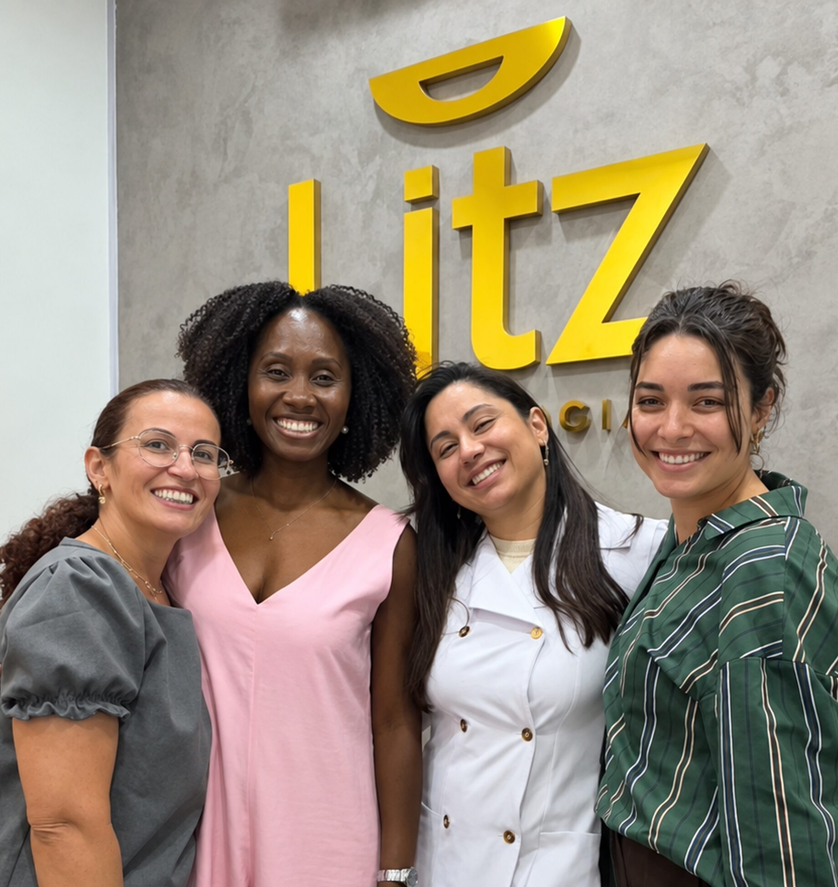
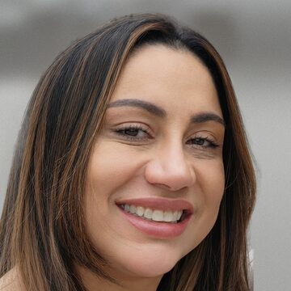
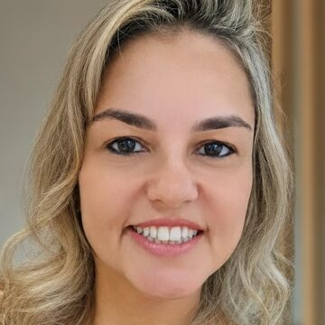
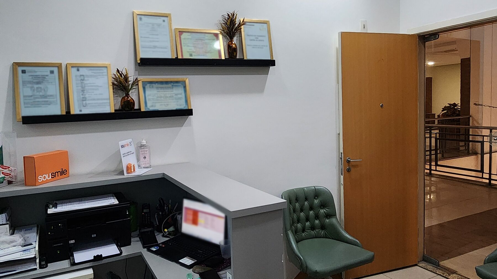
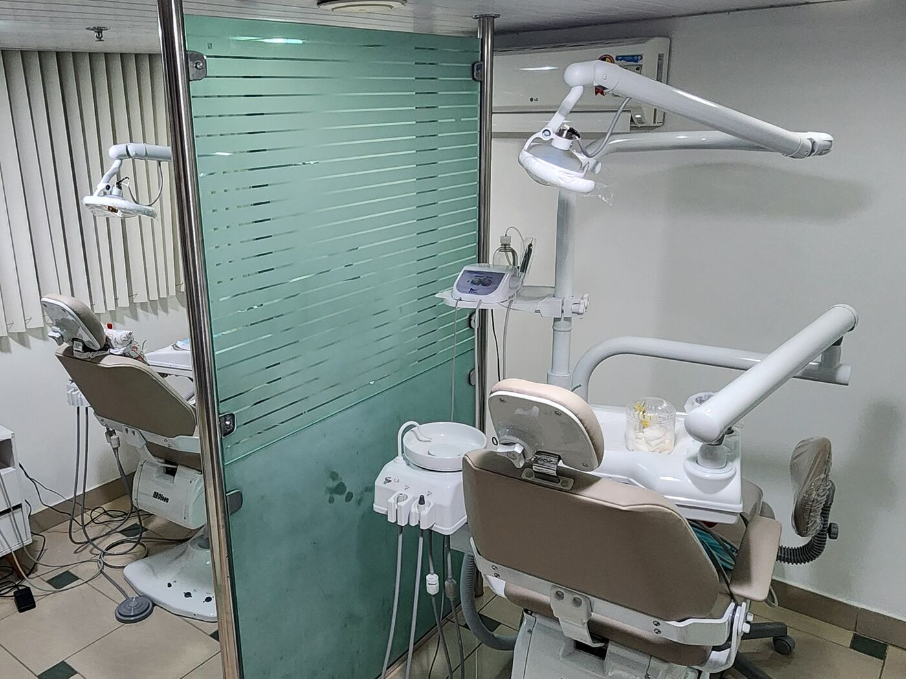
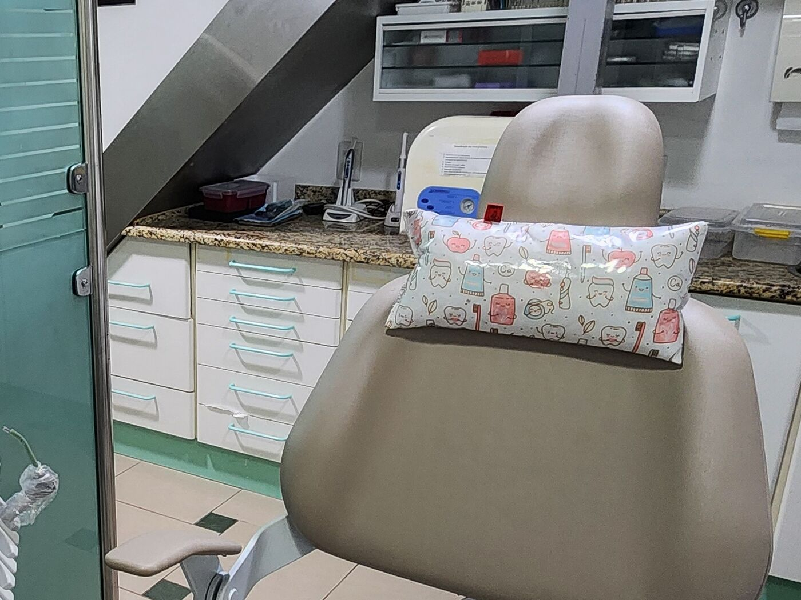

Parte da equipe Litz · Sala 377, CENA
Odontologia · Shopping Nova América
Odontologia que escuta,
antes de tudo.
Uma avaliação sem pressa, com o plano explicado em linguagem simples. Nada começa sem o seu sim.
Pode mandar mensagem a qualquer hora dúvidas são bem-vindas
Quem responde: Ana Paula, da recepção.Consultas das 13h30 às 20h e alguns sábados.Prefere ligar? (21) 3083-1700
Ou comece pelo motivo da visita:
“Sempre explica tudo com calma, passa segurança.”
Comece pelo que você sente.
Doze tratamentos, agrupados pelo motivo que traz você até aqui. Se não souber qual é o seu, a avaliação resolve.
-
 Estética do sorriso3 tratamentos
Estética do sorriso3 tratamentosDentes mais brancos, alinhados e harmoniosos.
-
 Repor dentes2 tratamentos
Repor dentes2 tratamentosPara voltar a mastigar e sorrir com firmeza.
-
 Saúde e alívio4 tratamentos
Saúde e alívio4 tratamentosCheck-up, dor de dente, gengiva e crianças.
-
 Rosto3 tratamentos
Rosto3 tratamentosHarmonização, toxina botulínica e lobuloplastia, com análise facial.
Estética do sorrisoPerguntar no WhatsApp
Está com dor de dente? Mande mensagem agora e conte o que está sentindo.
Falar sobre minha dorMedo de dentista é mais comum do que parece. Aqui, cada etapa é explicada antes de acontecer, e você pode pedir uma pausa sempre que precisar.
Especialistas na mesma sala
Ortodontia, implante e prótese e canal com especialistas da própria equipe, além de odontopediatria.
Sorriso e rosto, juntos
A harmonização facial é planejada pela mesma equipe que cuida dos seus dentes, a partir das suas proporções.
A família toda
Da primeira consulta das crianças ao implante dos avós, todo mundo de casa pode se cuidar no mesmo lugar.
O que os pacientes dizem
Palavras de quem já sentou na nossa cadeira, algumas famílias inteiras.
Atendimento maravilhoso. Ambiente muito limpo. Profissionais incríveis, muito atenciosas e educadas. Aqui de casa, fazemos tratamento na Litz, a família toda. Eu, marido e filhos. Saímos de lá sem nenhuma dúvida e chegamos pra qualquer procedimento sem medo algum. Confiamos demais.”
“A Dra. Nathalie cuida da minha família há anos e é aquela profissional que une técnica, cuidado e paciência. Sempre explica tudo com calma, passa segurança e é incrivelmente cuidadosa!”
“Recepcionista sempre solícita e educada. Dentista super atenciosa e calma, amei o atendimento.”
Sem surpresas, do oi ao sorriso.
Quatro passos, da primeira mensagem ao tratamento. Você sabe o que acontece em cada um antes de vir.
Agendar minha avaliaçãoA mensagem já vem escrita: é só enviar.
Você manda uma mensagem
Conte pelo WhatsApp o que quer mudar ou o que está incomodando, do seu jeito.
Ouvimos e examinamos
A primeira consulta é uma avaliação: ouvimos suas preocupações antes de sugerir qualquer coisa.
Você conhece o plano
Opções, prazos e valores explicados com clareza, para você decidir com calma. Nada começa sem o seu sim.
Tratamento no seu ritmo
Cada consulta é explicada antes de começar, com tempo para perguntar antes, durante e depois.
Quem vai cuidar de você
Cada dentista com nome e registro no CRO-RJ à vista: você sabe quem vai atender antes mesmo de chegar.
-

-
Winnie Lopes
Ortodontista · Pacientes com necessidades especiais
CRO-RJ 40803 -
Felipe Roubertie
Implantodontista · Protesista
CRO-RJ 38614 -
-

Amanda Moraes
Ortodontista
CRO-RJ 33681 -
Ana Paula Batista
Secretária · Auxiliar em saúde bucal
Não sabe com quem marcar? Comece pela avaliação: se precisar de um especialista, você já sai sabendo o próximo passo.
Agendar uma avaliaçãoPor dentro da Litz
Veja a recepção e a sala antes da primeira consulta, e chegue sabendo para onde vai.



Tenho medo de dentista. A Litz é para mim?
Sim. Conte na mensagem como você se sente: a equipe já chega sabendo, explica cada etapa e vai no seu ritmo, com pausas sempre que precisar.
Vou sentir dor?
O que pode incomodar é feito com anestesia, e você pode pedir uma pausa a qualquer momento. Se a dor é o motivo da visita, conte na mensagem: a equipe já fica sabendo antes de você chegar.
Quanto custa um tratamento?
Cada plano depende da avaliação. Você conhece os valores depois que entendemos do que precisa, sempre antes de começar qualquer coisa, e decide com calma.
Vocês atendem crianças?
Sim. A odontopediatria atende desde o primeiro dente, com uma primeira visita no tempo da criança e os responsáveis acompanhando de perto.
Como faço para agendar?
Pelo WhatsApp (21) 96600-6613. Em qualquer botão de agendar, a mensagem já vem escrita: é só enviar.
Qual é o horário de atendimento?
As consultas são de segunda a sexta, das 13h30 às 20h, e há atendimento em alguns sábados do mês. Em feriados e em dias de manutenção, a clínica pode estar fechada. Combine o dia pelo WhatsApp: pode mandar mensagem a qualquer hora, e respondemos no horário de atendimento.
Onde fica a clínica?
Shopping Nova América, centro médico CENA, 3º piso, sala 377. Ao lado da estação Del Castilho do metrô (Linha 2), e o shopping tem estacionamento.
Fácil de chegar, dentro do Nova América
Ao lado da estação Del Castilho (Linha 2), com estacionamento no shopping. Das 13h30 às 20h, dá para vir na saída do trabalho.
- Endereço
- Shopping Nova América, CENA, 3º piso, sala 377
Rio de Janeiro – RJ, 20765-000 - Horário
- Seg. a sex., 13h30–20h
Alguns sábados, pelo WhatsApp
Fale com a gente
- Metrô · Linha 2Del Castilho
- ShoppingNova América
- Centro médicoCENA
- Andar3º piso
- Litz OdontologiaSala 377
O primeiro passo é só uma mensagem.
Conte do que você precisa e a gente encontra um horário que funcione para você: à tarde, à noite ou em alguns sábados.
Prefere tirar uma dúvida antes?